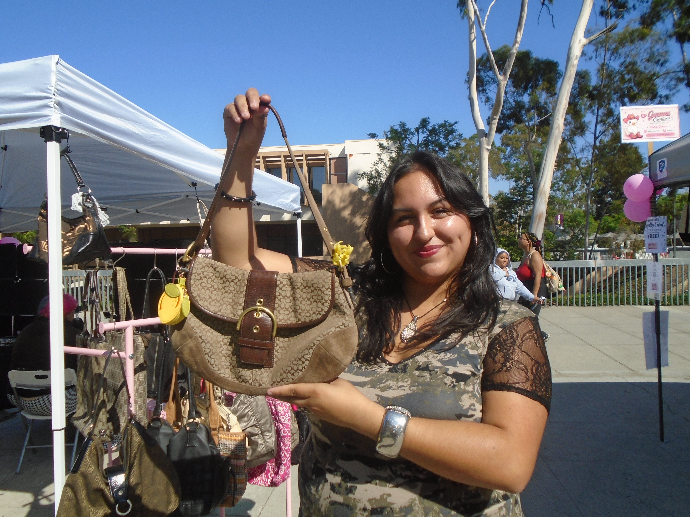
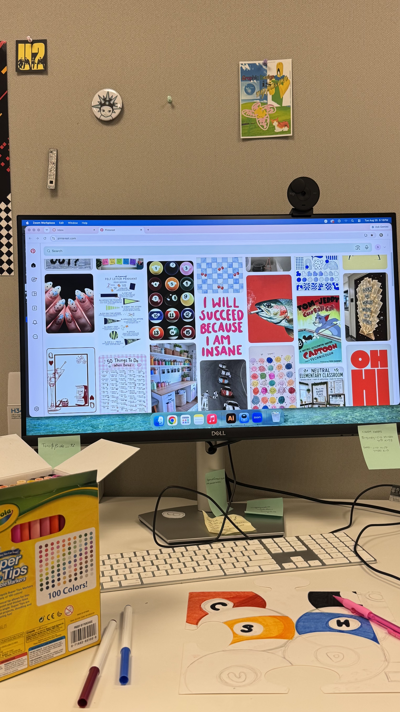
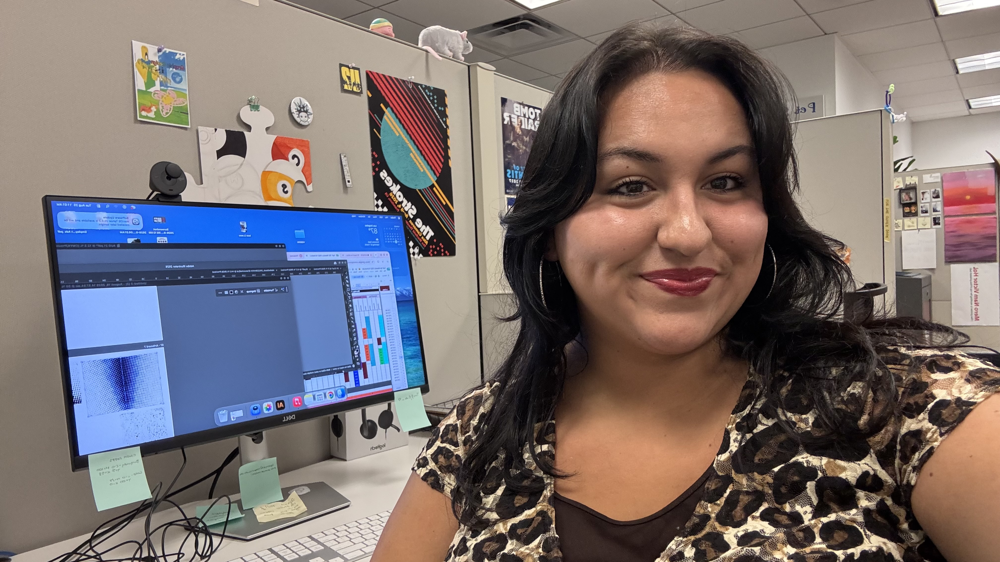
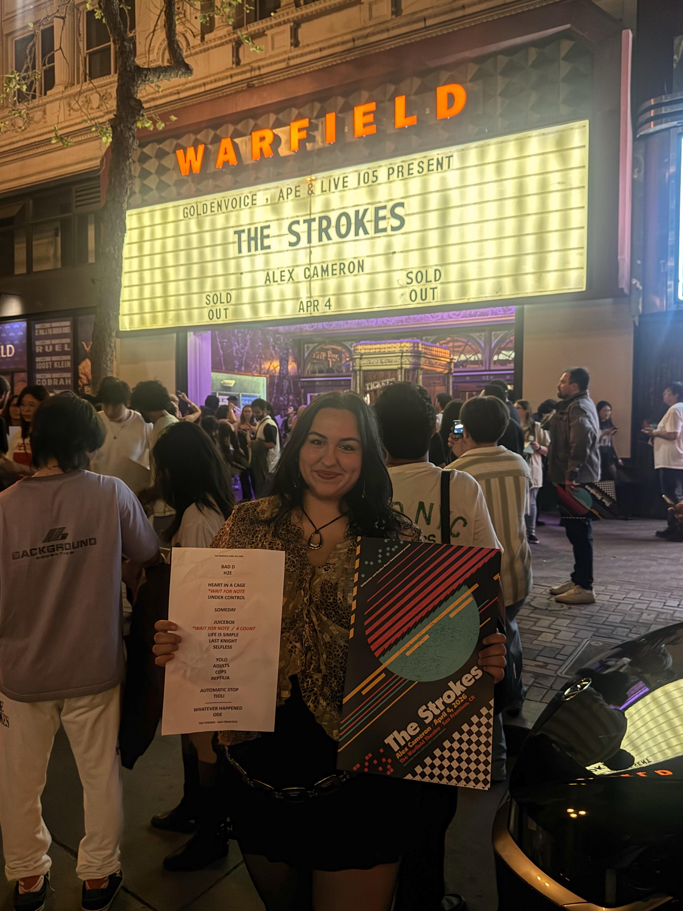

Get to Know me!
Hello, my name is Sophia Minerva Godoy, and I’m 21 years old. I’m a full-time graphic design major, and this is my first time coding on my own… kinda nervous, but determined. My favorite music genre is alternative, and my favorite band are The Strokes. Ive seen them twice already upfront! For one of their concets i actually got the setlist!!
I have two jobs. On weekends, I work at the Cabrillo Marine Aquarium in San Pedro. During the week, I go to class and work as the LSU graphic designer. It’s been a big achievement for me! I hope you get to see my work this year! I love to draw, and I recently finished paying off my car! I’m excited to graduate next May!
I also have a side gig! I run a small business here on campus every Thursday in the south walkway. I love thrifting and purses, so I specifically thrift accessories, including keychains and pre-loved bags, and give them a fresh start. I carefully wash and polish each one before selling it at a fair price. I love finding pieces with potential and helping them get a little more life before they head to a new home.




Things in My Room That Just Make Sense
- A leopard carpet on the wall
- A corner dedicated to music
- A thriving jalapeño plant
- A memory wall for me and my pookie